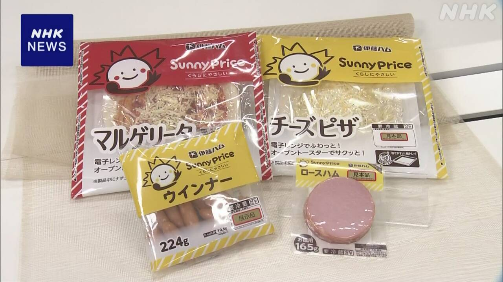
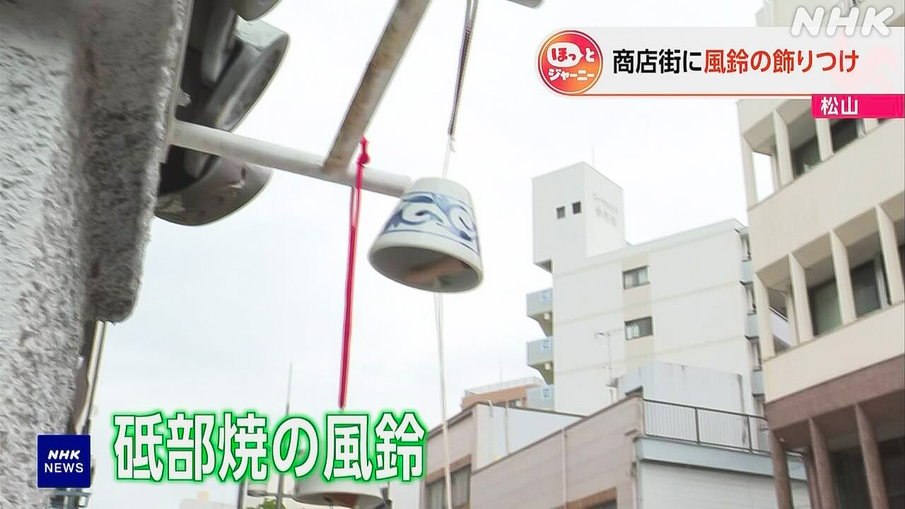

最新ニュース
1️⃣ 国が予算を増やす 電気代やガス代を安くするため
アメリカなどとイランの戦いが続いて、いろいろな物の値段が上がっています。
国会は、5日、国の予算を3兆1000億円ぐらい増やすことを決めました。
政府は、このお金を使って、経済が悪くならないようにしたいと考えています。電気代やガス代などを安くできるように準備しています。
政府は、この予算のために、「国債」を出してお金を借りる予定です。
2️⃣ 商品の袋 色を減らす会社が増える

イランでの戦いが続いて、インクなどの値段も上がっています。
「伊藤ハム」は、7月から、袋の色を少なくした新しいウインナーやピザを売ることを決めました。
今までの商品は、袋の印刷に5つから8つの色を使っていました。新しい商品は、3つの色を使ったシンプルなデザインの袋にします。
会社の人は「袋などの値段も上がっています。色を少なくしても、いいデザインになると思います」と話していました。
お菓子の会社「不二家」もクッキーやパイの袋の色を少なくする予定です。これからも、袋などの色を少なくした商品を売る会社が増えそうです。
3️⃣ 若い人が「トクリュウ」の犯罪をしないように 警察が学校で話す
SNSで若い人を集めて犯罪をさせる事件が増えています。このような犯罪をするグループは「トクリュウ」と呼ばれています。
警察によると、去年、「トクリュウ」の強盗事件で、14歳から19歳の人が、116人捕まっています。5月、栃木県で起こった事件でも高校生が捕まりました。
警察は、「トクリュウ」の危険をもっと若い人に伝えなければならないと考えています。６月からは、警察官が中学校や高校に行って、犯罪をしたあとお金をもらえないことや、若くても許してもらえないことを伝えます。
4️⃣ 「風鈴の音を聞いて涼しく感じてほしい」

「風鈴」を飾る季節になりました。
愛媛県松山市の商店街では、毎年、観光に来た人などに涼しく感じてもらうため、店の前に風鈴を飾ります。
今年も、店の人や高校生たちが、愛媛県でつくった砥部焼の風鈴を飾りました。金魚や朝顔など夏らしい絵がかいてあります。
風鈴を飾った高校生は「音を聞いて、涼しく感じてほしいです」と話していました。
大分県から来た女性は「今はあまり風鈴を見ないので、 昔のようでいいですね。とても涼しくなりました」と話していました。
- 〜など
- 〜ている / 〜でいる
- 〜こと
- 〜くらい / 〜ぐらい
- 〜ように
- 〜ならない
- 〜ようにする
- 〜や〜など
- 〜予定だ
- 〜ため
- 〜ため(に)
- 〜予定
- 〜から
- 〜まで
- 〜になる
- 〜と思う
- 〜ても / 〜でも
- 〜そうだ
- 使役 (〜させる / 〜せる)
- 〜ような
- 〜によると
- 〜なければならない
- 〜てもらう / 〜でもらう
- 〜後 / 〜あと
- 〜中
- 〜前に
- 〜らしい
- 〜かい / 〜だい
- 〜ていい
- 〜ので
vebaev.github.io
Generated: 2026-06-05 12:39:28 UTC